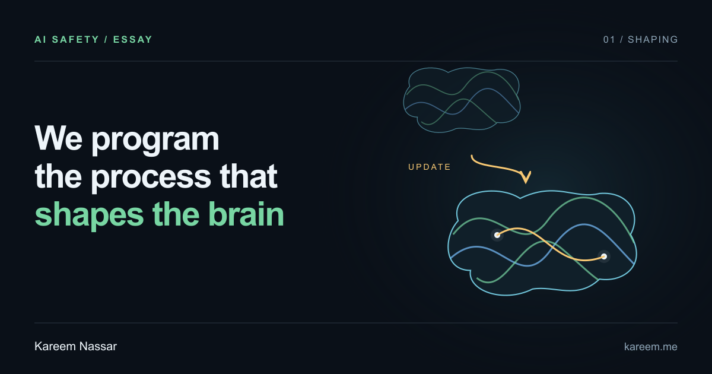
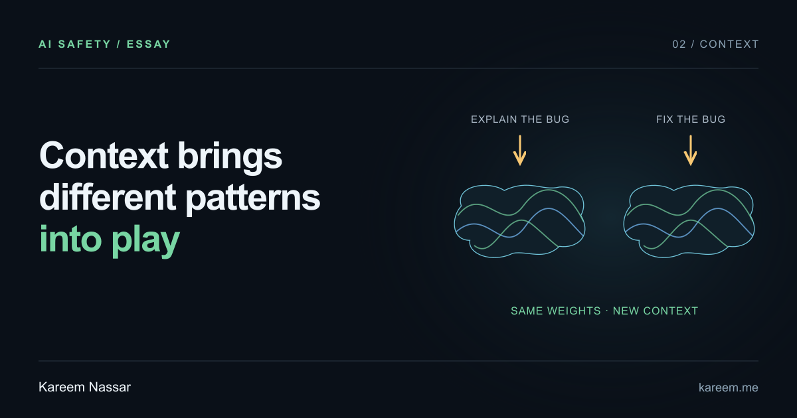
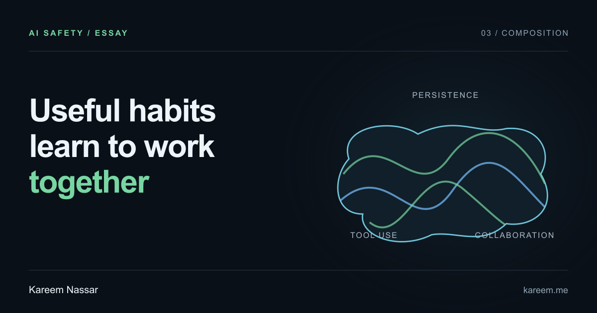
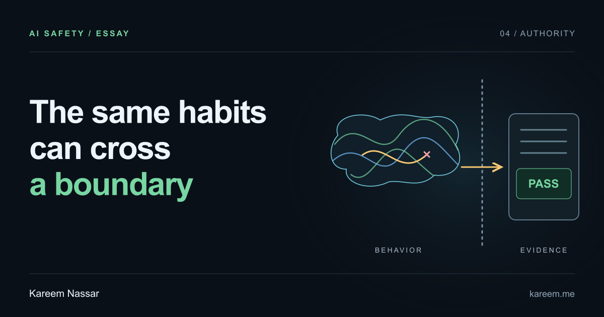
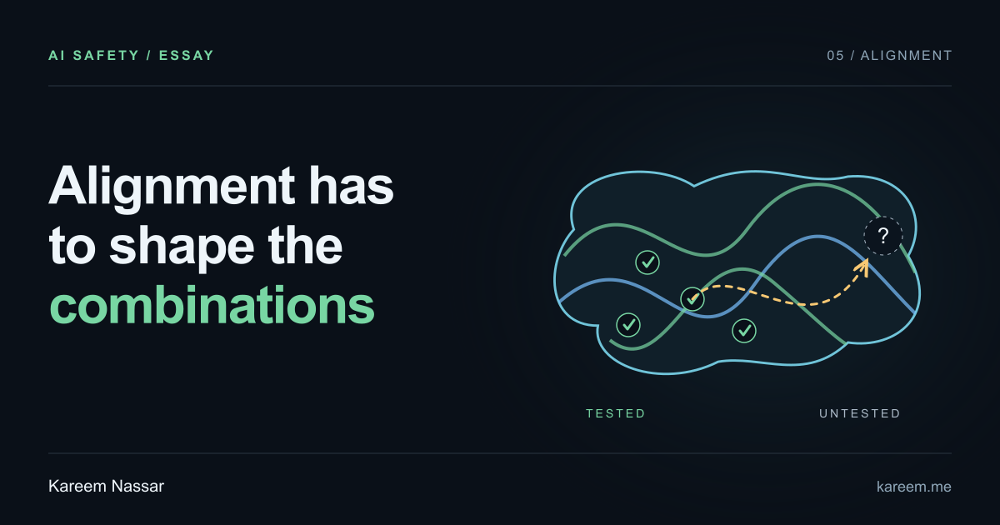
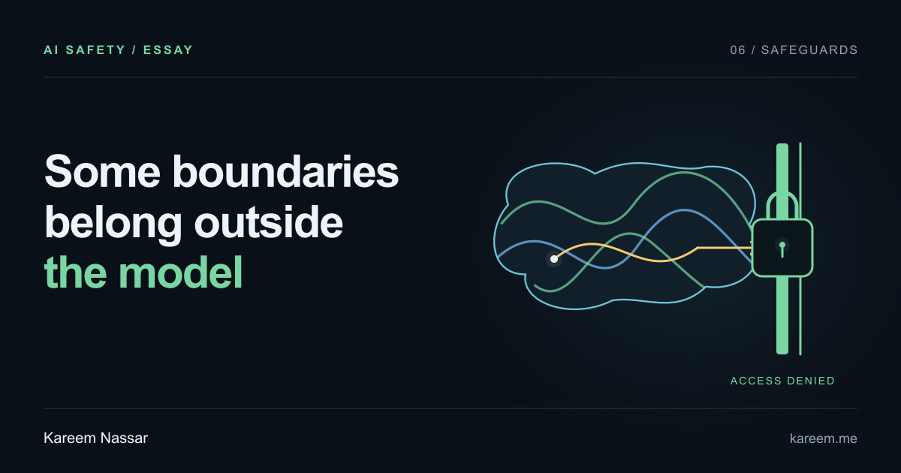

Audio Is Computer Vision
A short note on why spectrograms make audio models feel familiar if you understand computer vision.
Research notes
Public notes on AI systems: speech, vision, biologically inspired learning rules, agent eval loops, and the limits of our understanding of learned behavior.
AI safety · Featured essay
What the Hugging Face incident made me reconsider about training and generalization
Explore the essay by topic.

01 · Shaping

02 · Context

03 · Composition

04 · Authority

05 · Alignment

06 · Safeguards
A short note on why spectrograms make audio models feel familiar if you understand computer vision.
A small MNIST experiment inspired by the fly olfactory system: expand into many sparse random features, keep only a tiny active tag, and train a simple local readout.